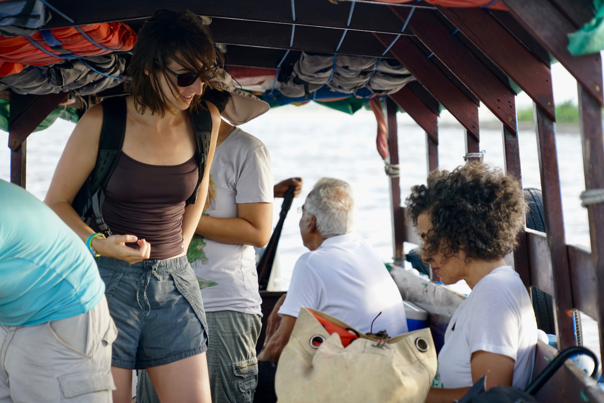

Quittant Yohan de la Reserve de l'Amana au nord de la Guyane, nous longeons la cote atlantique que nous photographions systematiquement : escortes par des oiseaux, nous decouvrons un Surinam entierement vert, ou la foret vierge y est largement majoritaire et intacte, et dont la cote est en evolution permanente -- des larges bandes de mangrove s'attachent puis se detachent, se laissant charrier par le courant.
Arrives a Paramaribo, la capitale du Surinam bordee par un fleuve, nous rencontrons enfin Monique, la commanditaire des 2 700 photos de la cote. Monique est une grande brune qui parle couramment francais, anglais, hollandais et espagnol. Elle a fonde sa propre ONG -- Green Heritage Suriname Fund -- vouee a defendre les animaux et leur environnement.
Passer aux toilettes et etre observe par un paresseux a deux doigts, prendre son cafe devant un fourmilier, avoir une discussion avec Monique tout en se faisant escalader par un paresseux a trois doigts... il y en a partout : pres d'une centaine ! Et tous sont a croquer !

Elle nous explique que les citadins lui apportent les animaux qui se sont perdus en ville et sont blesses. Son equipe les recueille, les nourrit, les soigne jusqu'a ce qu'ils soient aptes a retourner a la vie sauvage.
Nos photos geolocalisees de la cote serviront a suivre l'evolution des sites de ponte des tortues et a contribuer aux etudes visant a encadrer les projets d'exploitation de sabliere prevus sur les bancs de sable.
À la recherche des dauphins de Guyane
Une autre mission nous attend : trouver depuis le ciel des petits dauphins de Guyane, si difficiles a distinguer depuis le bateau. La raison ? Comprendre et mesurer l'evolution de cette population de dauphins sud-americains ainsi que leurs routes de migration, afin de s'assurer que les projets de forage petrolier ne les affectent pas.
Monique dans son bateau, nous dans l'ULM, tous connectes par radio marine, nous nous divisons la zone pour multiplier nos chances. Mais apres quelques jours, force est de constater que les dauphins ne se distinguent pas mieux de l'eau boueuse depuis les airs que depuis le bateau. Dommage.
En repartant, Monique nous offre un paresseux en peluche ! Notre nouvelle mascotte !